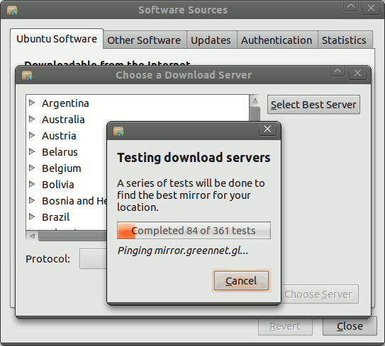
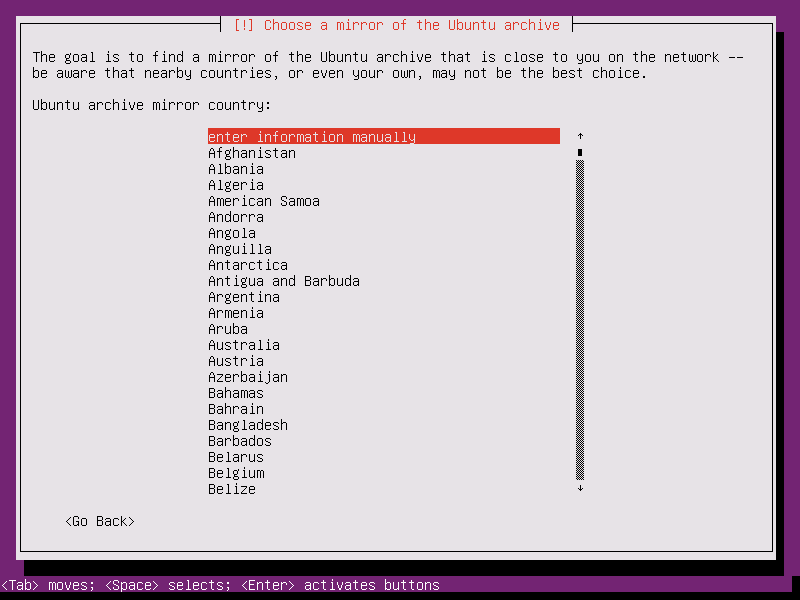

By Hans-Christoph Steiner · December 7, 2020
There are many ways to get the apps and media, even when the Internet is expensive, slow, blocked, or even completely unavailable. Censorshop circumvention tools from ShadowSocks to Pluggable Transports can evade blocks. Sneakernets and nearby connections work without any network connection. Hosting on Content Delivery Networks (CDNs) can make hosting drastically cheaper and faster. One method that is often overlooked these days is repository mirrors. Distribution setups that support mirrors give users the flexibility to find a huge array of solutions for problems when things are not just working. Mirrors on local networks can be much cheaper. Mirrors in specific countries are often not blocked or filtered. Mirrors can be copied onto portable storage and moved to where the users are.
Repository mirrors are mostly associated with free software distribution. Every major GNU/Linux distro, from Debian to Red Hat, is available via mirrors. Software collections like Android/Java’s Maven Central and Python’s PyPI support mirrors as well. F-Droid’s infrastructure is also based on mirrors. Free software repositories have proven so valuable, that there generally are mirrors maintained around the world. Local mirrors of popular free software repositories are available in all continents, and most countries.
Mirrors also add conceptual complexity to distribution. Users who are used to internet services that work without configuration could easily find discussion of mirrors confusing. Mirrors also mean that more pieces of infrastructure need to be maintained. When systems with mirrors are well organized, then this work can be broken into small chunks and widely shared, often even by volunteers, so that the overall system is resilient and maintainable even given limited resources.
Good mirroring support must disconnect how the data is downloaded from how the data integrity is maintained. That means data can come from anywhere, and still be properly verified before installing it. This is usually done with an index of files signed by public key cryptography. A system built on HTTPS and trusted servers is a bad candidate for mirroring. This separation of concerns is a key property of distribution systems that allows them to be flexible while still providing fully verified distribution.
Then, it must be easy for users to configure the mirrors in use. First and foremost, mirrors should work without the user doing anything. To ensure flexibility, they must be easy to add and remove, and new mirrors must be easy to find. Both end users and repository operators should be able to specify mirrors to be used. Legal requirements must also be heeded: the whole system should not require any service that might be legally questionable in any relevant jurisdiction. EU users need GDPR-compliant services. If the aim is to distribute in China, then the system cannot require Google Cloud Services. Instead, it should also be able to go through cloud services available in China.
There are many CDN providers around the world. Many of these are in effect a mirroring service since they are pointed at a website hosted elsewhere, then they just cache the files. Some of them are so cheap, that files can be hosted there without signing up. This happens usually via source code repositories like GitHub. For example, RawGit is an automatic, CloudFlare-based CDN for any public repository on GitHub, gitlab.com, or BitBucket. These fronting services are so cheap because they are basically only serving cached files. Each given URL is set to be served from the cache for a long time, up to a year, without checking whether the file has changed. In order to taken advantage of this kind of CDN setup, the repository must be designed accordingly. That means each unique file should have a unchanging, unique URL. There are two techniques for doing that:
org.fdroid.fdroid_1001000.apk or 1.10/F-Droid.apk.icon_CQLCGleZNBzDPRNp1ADs121TecVHFmUbe-Au-4qXF08=.png or CQLCGleZNBzDPRNp1ADs121TecVHFmUbe-Au-4qXF08=/icon.png.Mirrors are like all internet services in that there are always potential privacy leaks. To protect users’ privacy, it is important to be conscious of the potential metadata that is visible in the system, and who can get that data. For example, transport encryption (TLS, HTTPS, etc) should be used even though the signed index provides strong integrity checks in order to reduce metadata leaks. Even with transport encryption, the oeprators of the mirrors themselves will still see the metadata. When there are individual files that users can download, the mirror operators could see which user is downloading which file. Metadata like the description of a movie file or the icon of an app will give away the user’s interests. When possible, this metadata should be grouped to reduce the detail in the metadata. Icons can be downloaded in random groups of 10. Text descriptions can be grouped by language or other more neutral grouping.
F-Droid repositories, aka “repos”, are collections of packages, mostly Android APK app files, which are organized in a single folder. That folder contains a signed index file which lists the entire contents and related metadata. This includes descriptive texts, available graphics, etc. This file structure is not tied to any particular transport method as long as the repo/ folder and index remain intact. The client keeps the public key of the index signature locally, and uses that to verify the index file. The index also includes a list of URLs pointing to official mirrors. By default, repositories are served over HTTPS, but nothing in the repository structure requires that. This allows F-Droid to use repositories from SD Cards and USB OTG thumb drives using file:/// URLs. A mirror is then simply defined: a mirror is any available copy of a repository. The mirror need not even be a complete copy, as long as the index and desired packages are present.
F-Droid automatically handles much of the process of using the mirrors. Each repo can include a list of official mirrors in the index. The F-Droid Android client will automatically use all of the official mirrors, automatically choosing one when downloading based on which is working. The mirrors are still completely configurable. Anyone can create their own mirror, either via the fdroid mirror command for any repo, or via rsync for f-droid.org. And F-Droid user can then “subscribe” to any mirror via the mirror URL. Users can also disable any mirror from the repo’s details screen.
The Guardian Project repo includes many of these mirroring channels: Mayfirst webserver, Tor Onion Service, Amazon AWS S3, GitHub Pages, GitHub Raw (Fastly), gitlab.com (Google Cloud), GitCDN/RawGit/Cloudflare and of course SD Card and USB OTG drives. F-Droid repos are particularly well suited to this kind of mirroring since the files are available via URLs that do not change. CDNs cache files by URL. f-droid.org is mirrored by free software mirror providers around the world, including China, France, Germany, Indiana, New York, Oregon, Spain, Sweden, and Tor Onion Service. Local mirrors mean faster, more reliable, and cheaper access, especially for people in places like China, where government policy and infrastructure design works to downplay access to foreign networks.
Extensive work has gone into making F-Droid the most private “app store” for mobile devices, including minimizing the potential metadata leaks. There is a single index file for all the packages, and it includes all the translations. So all users fetch the exact same index file, so the f-droid.org and mirror servers cannot infer from the index which language the device is using. The app icons and screenshsots are downloaded on demand, so that is one metadata leak. F-Droid requires either HTTPS or Tor Onion Service transport encryption to minimize such leaks.
F-Droid repos default to keeping 3 releases per package available. Also, the index is not tied to the mirror, the F-Droid Android client will happily fetch the index from one mirror, and each package from other mirrors. F-Droid will keep searching all the mirrors for a package until it finds it, so a mirror can be out of date yet still useful. Today’s update might only bring a couple new files, even if a mirror is delayed, it will still have all the previous content. That property ensures that distribution is not an all-or-nothing prospect. Instead, it can still transparently provide some level of access when there are troubles with the internet. This makes lots of different kinds of relibility problems look quite similar from the point of view of the F-Droid client app: outages, network troubles, blocks, and even working around expensive data.
Someone with a Raspberry Pi with an SD Card can be a local mirror server, even if they have irregular access to the internet. The Raspberry Pi can be easily brought to unmetered WiFi, then synced up with the main repo using fdroid mirror or rsync. Then when it is brought back to its home, the local users can get apps and updates even if there is no active internet connection in the area. This also works with USB OTG flash drives. A whole repo can be zipped up and broadcasted using a service like the satellite TV “Knapsack for Hope” service, their app already makes it easy to decode the broadcast and write it to USB OTG.
Ubuntu uses a system of mixed mirrors and CDNs based on standardized domain names, which includes some level of automatic setup based on measurement. The domain name is COUNTRYCODE.archive.ubuntu.com. During install, the user chooses the country to set up the device accordingly. The mirror is then set to use the mirror domain name based on that country, e.g. a device set to Uganda would use ug.archive.ubuntu.com. When a country-specific mirrors exists, that domain name points to it. Ubuntu has over 50 in-country mirrors. Otherwise, any other *.archive.ubuntu.com domain name points to a mirror running on a major CDN. This setup allows Ubuntu to change the mirror server-side setup separately from the user’s selection on their device. Additionally, users are then still free to edit the configuration and use any URL that they want, including pointing to local media like CDROMs and thumb drives. And anyone can create their own mirror without first getting permission.


{kind=link}
{kind=link}
{kind=link}
{kind=link}